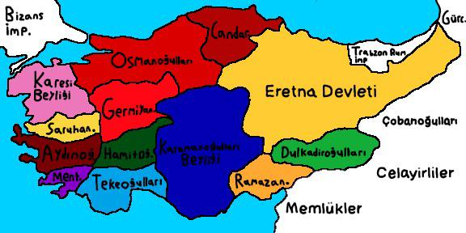

Kutalmışoğlu Süleyman Şah
Anadolu Selçuklu, diğer adıyla Türkiye Selçuklu Devleti 1075 tarihinde Kutalmışoğlu Süleyman Şah tarafından iznikte kuruldu. Bizanstan Anadolu yakasını aldılar. Süleyman Şah, Halifeden Menşur lakabını almış. Türkiye'ye ait ama Türkiye topraklarında olmayan Caber Kalesine gömülmüştür.
I. Kılıçarslan
- Yani kısmen olan fetret devrine son vermiştir.
- I. Haçlı Seferi sırasında gerçekleşen Dorileon Savaşında yenildik. Bu sefer, amacına ulaşan tek Haçlı Seferi’dir.
- Bu gelişmeler sonucunda başkent İznik’ten Konya’ya taşındı.
I. Mesud
-
II. Haçlı Seferi bu dönemde yapıldı. Eskişehir bölgesinde karşılaştık ve haçlıları geri yolladık.
Bu dönemde bakır para bastırıldı.
En önemlisi ise bu dönemde Bizans kaynakları ilk defa Türk isminden Turqia olarak bahsettiler.
II. Kılıçarslan
- Bu dönemde Bizans ile meşhur 1176 Miryokefalon (Yurttutan - Kumdanlı) savaşı yapıldı. Hani Pasinler ile kilidi kırıp Malazgir ile kapıyı açtığımız savaşlar vardı ya, bu Miryokefalon ile de Anadolunun Tapusunu aldık.
- Anadolu artık Türk yurdu haline geldi. Bizans bu savaştan sonra demiş ki, biz daha bu Türkleri atamayız Anadoludan.
- II. Kılıçarslan aynı zamanda altın para da bastırmıştır. Bu durum da ekonomik olarak bir gelişme olduğunu gösterebilir.
Gıyaseddin - Rükneddin - İzzettin
-
Bu üçleme döneminde İran - Fars etkisinde kalındığı zaten isimlerden belli.
Bu dönemlerde Antalya - Sinop alınmış.
Bir de Gıyaseddin, denizcilik faaliyetleri yürütmüş.
Alaaddin Keykubad
- Anadolu Selçuklu'nun en parlak dönemidir. Alaiye (Alanya) ve Kırım'ın Suğdak Limanı bu dönemde alınmıştır.
- Bu dönemde ticaret canlansın diye kervansaray ve hanlar yapılmış. Gümrük vergileri düşük tutulmuş.
- Hatta ticaret artsın diye sigorta uygulaması bile başlatmışlar. Devlet malı garantilemiş, malın bana emanet demiş ama doğudaki kaleleri onarmayı da unutmamışlar.
- Eyyubilerle ittifak kurmuşlar.
Biraz büyüyünce tabi bir egemenlik anlayışı gelmiş. Biz bu Harzemşahları alalım demişler. Almışlar, 1230 Yassıçemen Savaşıyla almışlar almasına da bir şeyi unutmuşlar. Bu Harzemşahlar tampon bölgeydi. Kimle kim arasındaydı? Moğol ve ASD. E şimdi tampon bölge aradan kalkınca Moğol ve ASD komşu oldu mu, oldu. Artık istilaya açık hale geldi. Sonrasında da 1243 Kösedağ Savaşıyla ASD yenildi ama yıkılmadı, Moğola bağlı hale geldi.
II. Gıyaseddin
- Babası Alaaddini öldürerek tahta geldi.
- Çok hayırlı bir evlattır.
- Vezir Saadettin Köpek ile beraber öldürdüler.
- Sonrasında 1240 yılında Baba İshak isyanı çıktı.
- Ben bu isyani şöyle hatırlıyorum. Zamanında ASD, halka demiş ki size kılıç hakkı veriyorum. Yani fethettiğiniz yer sizindir. Orada bir hayat kurun. E halk da bunu yapmış. Sonrasında ASD Abbasileri bir dönem bünyesine mi alıyor ne yapıyorsa artık. Bu kılıç hakkı olan yerlere diyor ki, baba siz burayı boşaltın. Abbasilere burayı verelim. E halk da kılıç hakkıyla aldığı yeri niye versin. İsyan etmişler.
- Anadoludaki ilk isyandır.
- Türk tarihinin ilk dini nitelikli toplumsal isyanıdır.
Baba İshak İsyanından sonra üstüne bir de 1243 Kösedağ Savaşı olunca ASD Moğola bağımlı hale gelmiş. İsyan ve üstüne başarısız bir savaş süreci çok hızlandırmış. Sonrasında Anadoluda Türk Siyasi Birliği bozulmuş. II. Beylikler dönemi başlamış, hani şu sonu oğulları ile bitenler.
II. Beylikler Dönemi (Anadoluda Kurulan İkinci Türk Devletleri)
Karamanoğulları, demişler ki biz Selçuklunun varisiyiz. O dönem zaten güçlüler. Karamanoğlu Mehmet Bey Türkçeyi resmi dil yapmış. Osmanlı ile Haçlılar savaşırken de gelip Osmanlıyı arkadan vurmuş.
Karesioğulları, Balıkesir ve çevresinde kurulmuşlar. Osmanlıya ilk katılan beyliktir. Osmanlı bu beylik sayesinde donanmaya sahip olmuş.
Hamitoğulları, Isparta - Antalya çevresi. Osmanlı bunları satın almış.
Germiyanoğulları, Kütahya.
Dulkadiroğulları, Osmanlının son aldığı beyliktir.
Çobanoğlu, Osmanlı kuruluşta buraya bağlıydı ve vergi ödüyorduk.
